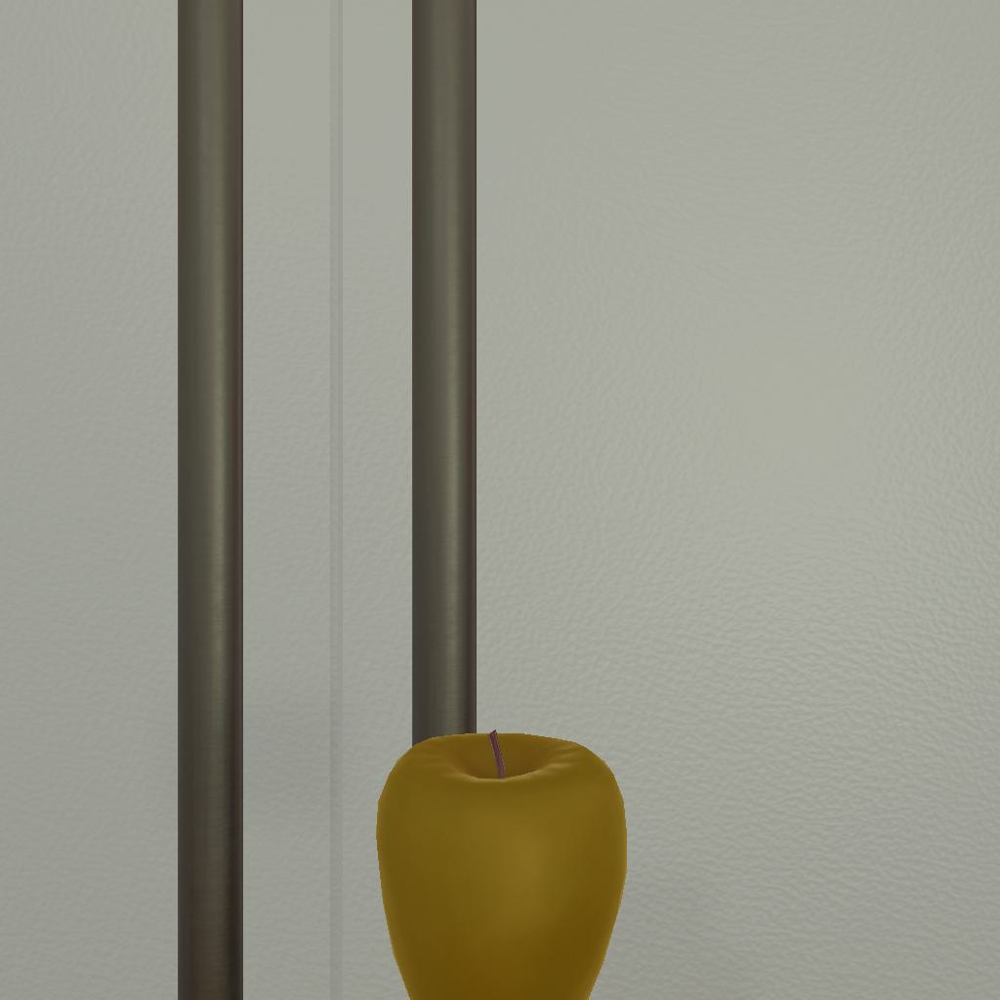

---------------------------------------------------------task: 24---------------------------------------------------------
--------------------------------------------------------------------------------------------------------------------------------------------------------------------
--------------------------------------------------------------------------------------------------------------------------------------------------------------------
Step:--------------------------------------------------------------------------11-------------------------------------------------------------------------------
----------------------------------------
VLM Prompt:
Image1:
Image2:
**Instruction**
1. Analyze the provided images to identify all visible household objects and compare the difference between images (e.h. whether the object is opened or not and taken on hand or not), focusing on those relevant to the task description "heat some tomato and put it in fridge."
2. Use the analysis of images and the task hint "The agent must find an object of the desired type, pick it up, go to a microwave, heat the object with the microwave, then find the correct location to place it, and put it down there. The agent does not need to use the microwave button or open the microwave to heat the object, and the agent just needs to do action that is "heat the object with the microwave"." to answer the question: what is the most reasonable action in the choices for the task description "heat some tomato and put it in fridge"?
3. Decide and write the answer using the template: The answer is: (i): , where i is the real number. If there is no desired object in images, search every place based on **Initial Observation** to find the object. And if no one is exactly correct, choose a similar answer.
**Initial Observation**
You are in the middle of a room. Looking quickly around you, you can see cabinet (1-14), countertop (1-2), microwave (1), drawer (1-5), sink (1), sinkbasin (1), coffeemachine (1), stoveburner (1-4), toaster (1), fridge (1), diningtable (1), garbagecan (1), safe (1)
**Answer Choices**
(1): go to cabinet 1
(2): go to cabinet 2
(3): go to cabinet 3
(4): go to countertop 1
(5): go to cabinet 4
(6): go to cabinet 5
(7): go to microwave 1
(8): go to cabinet 6
(9): go to drawer 1
(10): go to drawer 2
(11): go to drawer 3
(12): go to cabinet 7
(13): go to cabinet 8
(14): go to sink 1
(15): go to sinkbasin 1
(16): go to coffeemachine 1
(17): go to cabinet 9
(18): go to cabinet 10
(19): go to drawer 4
(20): go to cabinet 11
(21): go to stoveburner 1
(22): go to stoveburner 2
(23): go to stoveburner 3
(24): go to stoveburner 4
(25): go to cabinet 12
(26): go to toaster 1
(27): go to drawer 5
(28): go to countertop 2
(29): go to cabinet 13
(30): go to cabinet 14
(31): go to diningtable 1
(32): go to garbagecan 1
(33): go to safe 1
(34): put apple 1 in/on fridge 1
(35): cool apple 1 with fridge 1
(36): examine apple 1
(37): examine fridge 1
**Answer**
Let's think step by step by following the instructions.
----------------------------------------
----------------------------------------
Original Response:
Firstly, analyzing the images, we can see a yellow apple in both images, which is irrelevant to the task of heating a tomato. There are no visible tomatoes or objects that can be associated with tomatoes in either image.
Based on the task description, the agent needs to find a tomato, heat it in the microwave, and then put it in the fridge. Since no tomato is visible in the provided images, we must search every place based on the Initial Observation to find the object.
Considering the most common locations for storing tomatoes in a household setting (usually in a fridge or a cabinet), the most reasonable action from the choices would be to look inside the fridge first, as tomatoes are commonly refrigerated after being heated.
The answer is: (37): examine fridge 1.
----------------------------------------
----------------------------------------
>>> Refine Original VLM Response and Get Pure Action: examine fridge 1
----------------------------------------
-----------------------------------------------------------------
Running time: 10.590899467468262 seconds
Total Money: 12.417160000000004
-----------------------------------------------------------------
-----------------------------------------------------------------
Text Observation:On the fridge 1, you see a cup 1, and a egg 1.
-----------------------------------------------------------------
UNSUCCEED